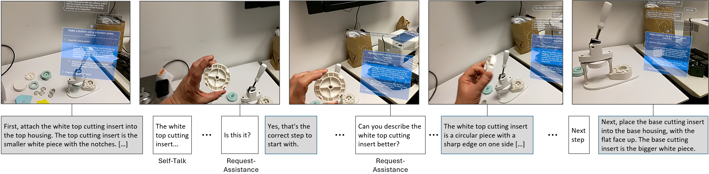
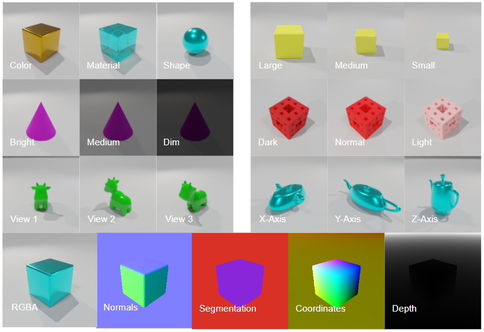
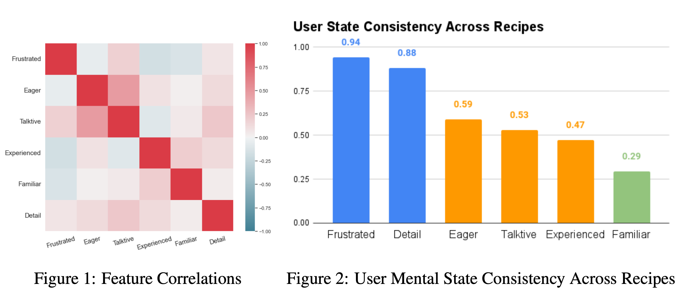
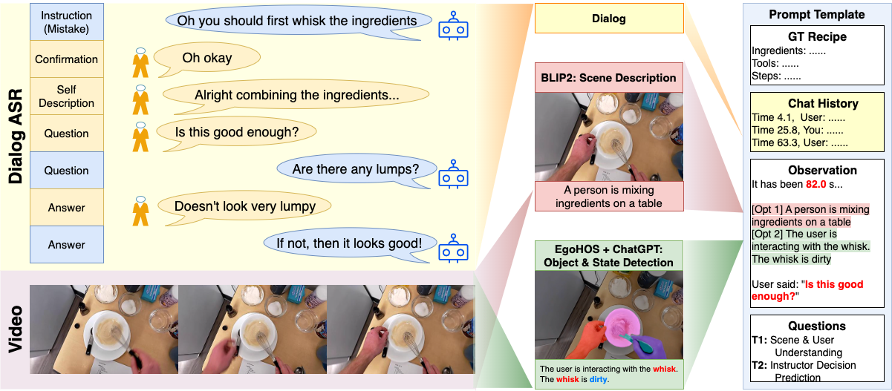
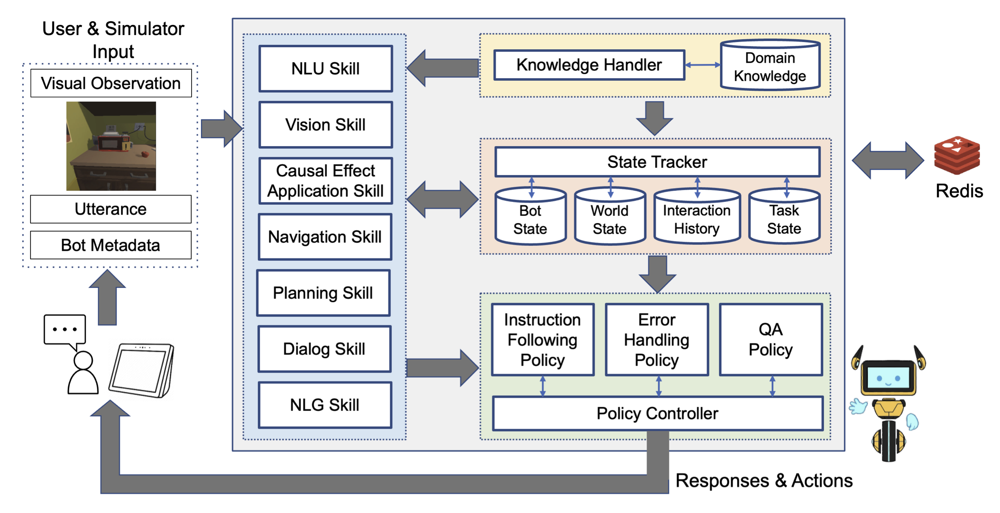
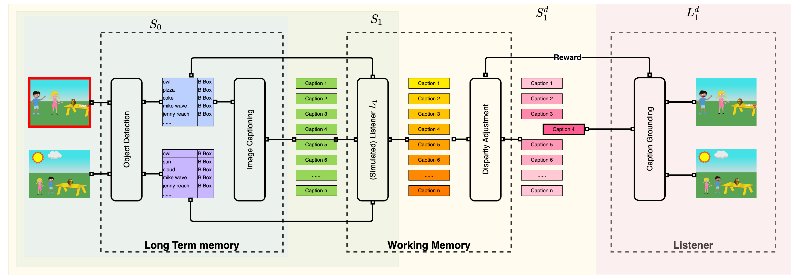
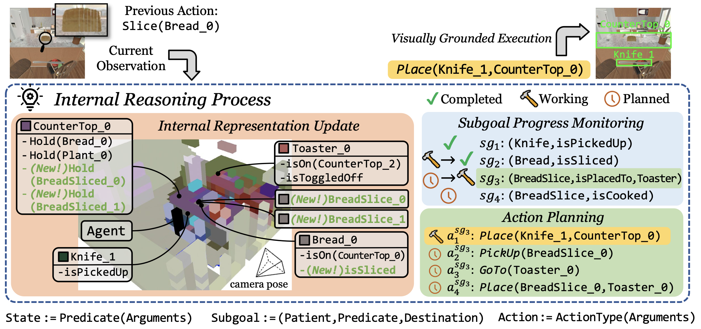
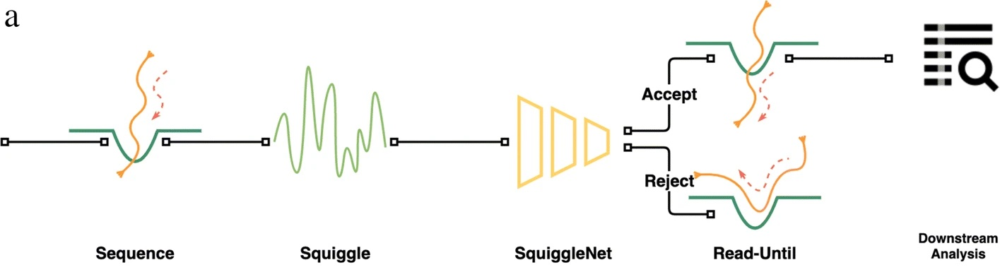

"Is This It?": Towards Ecologically Valid Benchmarks for Situated Collaboration
Dan Bohus, Sean Andrist, Yuwei Bao, Eric Horvitz, and Ann Paradiso
ICMI 2024 LBR

Human Inspired Progressive Alignment and Comparative Learning for Grounded Word Acquisition
Yuwei Bao, Barrett Lattimer, and Joyce Chai
ACL 2023 Dribbble Github 🌟 Honorable Mentions for the Best Paper Awards


Can Foundation Models Watch, Talk and Guide You Step by Step to Make a Cake?
Yuwei Bao, Keunwoo Peter Yu, Yichi Zhang, Shane Storks, Itamar Bar-Yossef, Alex de la Iglesia, Megan Su, Xiao Lin Zheng, Joyce Chai
EMNLP 2023 Dribbble Github

SEAGULL: An Embodied Agent for Instruction Following through Situated Dialog
Yichi Zhang, Jianing Yang, Keunwoo Peter Yu, Yinpei Dai, Shane Storks, Yuwei Bao, Jiayi Pan, Nikhil Devraj, Ziqiao Ma, Joyce Chai
Amazon Alexa Prize SimBot Challenge Proceedings, 2023 Dribbble 🌟 First Prize Award


DANLI: Deliberative Agent for Following Natural Language Instructions
Yichi Zhang, Jianing Yang, Jiayi Pan, Shane Storks, Nikhil Devraj, Ziqiao Ma, Keunwoo Peter Yu, Yuwei Bao, Joyce Chai
EMNLP 2022 Dribbble Github

SquiggleNet: Real-time, Direct Classification of Nanopore Signals
Yuwei Bao, Jack Wadden, John Erb-Downward, Piyush Ranjan, Weichen Zhou, Torrin McDonald, Ryan Mills, Alan Boyle, Robert Dickson, David Blaauw, Joshua Welch
Genome Biology 2021 Dribbble Github

Clustering Anesthesiology Case Data for Machine Learning
Michael Burns, Anik Sinha, Yuwei Bao, Sean Meyer, John Vandervest, Sachin Kheterpal
MLHC 2018 Dribbble
Rapid pathogen identification in bacterial pneumonia using real-time metagenomics
Kathryn Pendleton, John Erb-Downward, Yuwei Bao, William Branton, Nicole Falkowski, Duane Newton, Gary Huffnagle, Robert Dickson
AJRCCM 2017 Dribbble